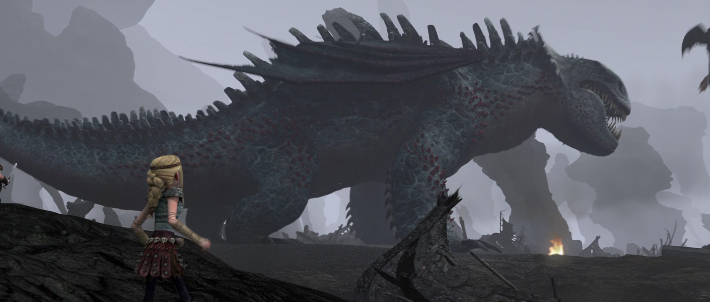

Dragão: Morte Rubra Vilão
Enquanto ele é universalmente considerado o mestre de todos os dragões, de fato, pouco se sabe sobre a Morte Rubra, mas o que se acredita é que: A Morte Rubra vive por 2.000 anos e, pouco antes de morrer, ele coloca 3000 ovos. Uma vez que eclodiram, os filhotes lutar e matar uns aos outros até que apenas cerca de um dragão dominando - diz a lenda que essa luta pode levar até 100 anos. Alguns acreditam que sua luta contra a morte à nascença é realmente uma luta por território, com o vencedor final reinando sobre o centro do mundo e os poucos sobreviventes de serem expulsos para regiões distantes. Isso pode explicar as lendas de cobras gigantes que existem ao redor do mundo em lugares como China, África e Rússia. Ao contrário de outros dragões, Morte Rubra pode viver sua vida inteira em uma única caverna, sobrevivendo a comida trazida por seus subordinados Dragões - certamente eles são difíceis de encontrar. Mas, claro, se alguém está com fome e à procura de comida, ele pode acabar encontrando Categoria dragoes Classe rocha.
Características notáveis: Cauda batido, três pares de olhos, cabeça folho.
Tamanho: Colossal.
Comprimento: 510 pés 155,4 metros.